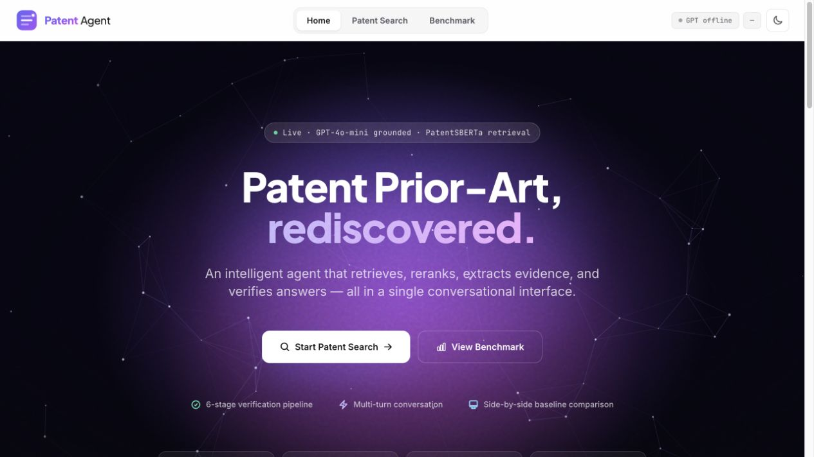
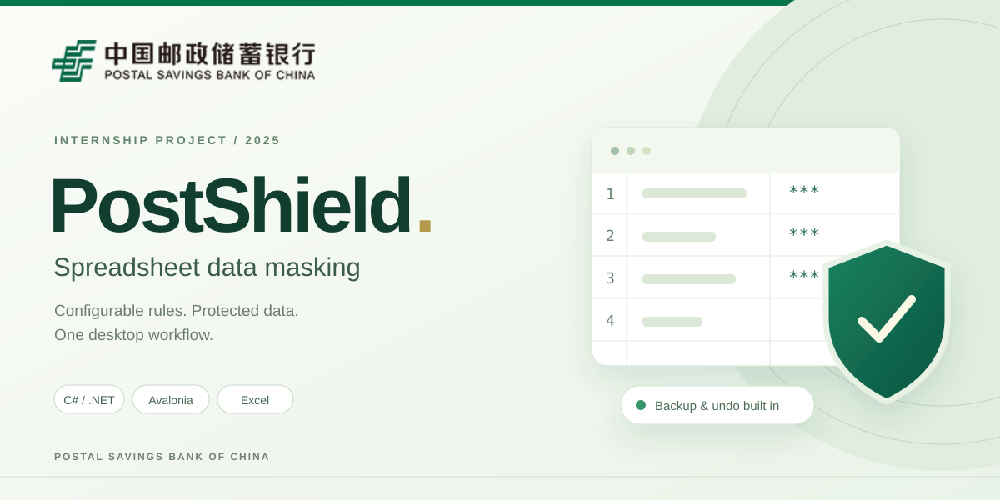
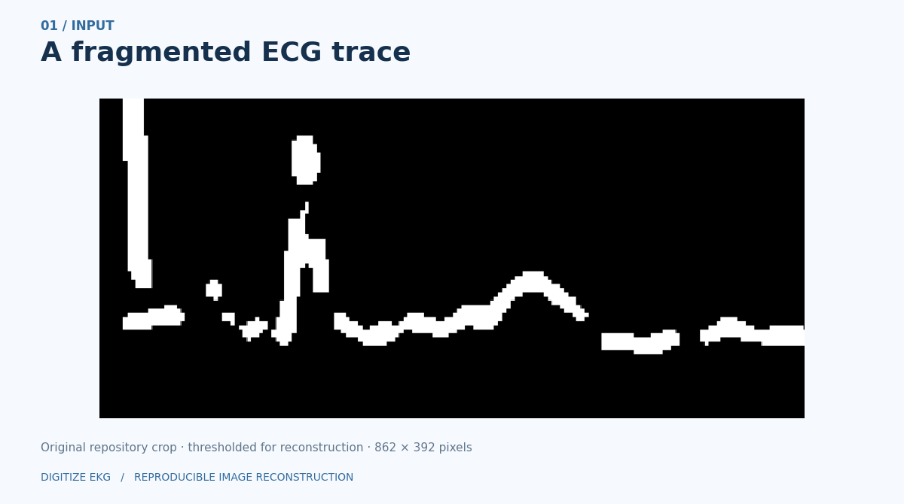

2026
Patent Agent
LLM Agent Development
A tool-using agent for patent prior-art search, claim-level evidence alignment, and verified, source-grounded answers.

2026
LLM Agent Development
A tool-using agent for patent prior-art search, claim-level evidence alignment, and verified, source-grounded answers.
2026
Full-Stack Development
A source-grounded platform connecting Emory students with faculty research, academic events, career resources, and a personal action plan.

May 2025 – Jul 2025
Software Engineer · Postal Savings Bank of China
A desktop application that brings Excel discovery, configurable sensitive-data masking, and backup-based undo into one workflow.

2026
Computer Vision & Signal Processing
A computer vision pipeline that reconnects fragmented ECG image traces using skeletonization, endpoint detection, and tangent-guided gap repair.